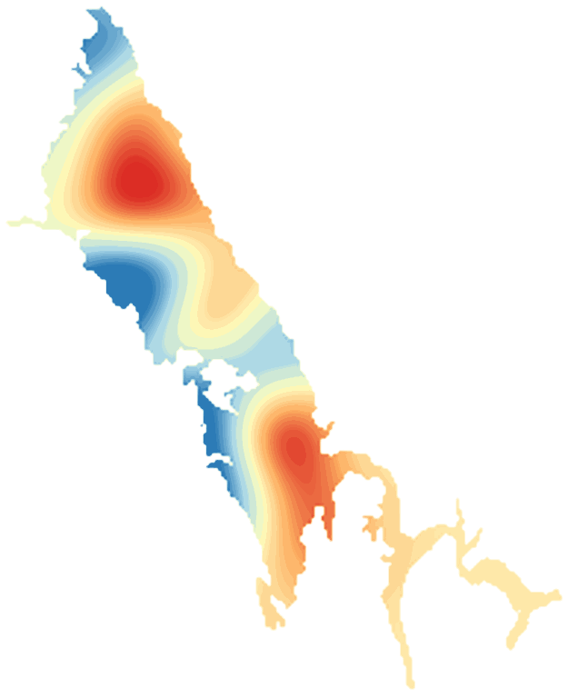

LakeScope › CA
Lake Berryessa today
Updated 2026-11-26 - Atlas Labs
Clear water, 52°F water, level rising, 5 ft above normal, calm this morning.
Water level
427.41 ft
California Dept. of Water Resources - 2026-11-24
7-day trend: rising (+0.20 ft). Compared with normal for this date: +5.3 ft (same weeks, 2016-2025).
Water clarity and algae
Clear water Last clear view: over a week ago. 2 cloudy passes since.
Surface temperature
52°F
seen from space on 2026-11-23

Ice
Open - 0% ice cover
Estimate from weather and satellite, not a measurement. Check the ice yourself before going on it.
Weather, next 3 days
| Day | Sky | High / low | Wind | Rain |
|---|---|---|---|---|
| Thursday | Patchy Fog then Partly Sunny | 64 / 50°F | 1 mph NE | 0% |
| Friday | Patchy Fog then Mostly Cloudy | 66 / 52°F | 1 mph SE | 0% |
| Saturday | Patchy Fog then Partly Sunny | 65 / 52°F | 2 mph NE | 1% |
Sunrise 07:03 - sunset 16:49 - Full moon. National Weather Service.
Get the LakeScope app: alerts and the 3-D view of Lake Berryessa